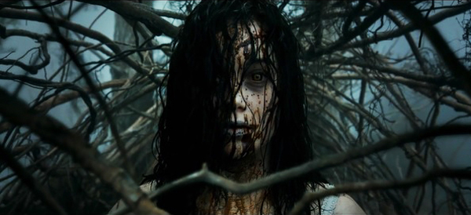

Evil Dead
"You'll hate this movie."The most terrifying movie you'll ever experience!
Summary
Mia (Jane Levy), a drug addict, is determined to kick the habit. To that end, she asks her brother, David (Shiloh Fernandez), his girlfriend, Natalie (Elizabeth Blackmore) and their friends Olivia (Jessica Lucas) and Eric (Lou Taylor Pucci) to accompany her to their family's remote forest cabin to help her through withdrawal. Eric finds a mysterious Book of the Dead at the cabin and reads aloud from it, awakening an ancient demon. All hell breaks loose when the malevolent entity possesses Mia.
Characters
(Click link above labeled main characters to learn more about them.)
- Jane Levy(Mia)
- Shiloh Fernandez(David)
- Lou Taylor Pucci(Eric)
- Jessica Lucas(Olivia)
- Elizabeth Blackmore(Natalie)
Minor Characters:
- Phoeni Connolly
- Jim McLarty
- Sian Davis
- Stephen Butterworth
- Karl Willetts
Setting
(Click link above to learn about the setting of the movie.)
A remote cabin that was an old family retreat in the woods.

Other Information
Directed by-- Fede Alvarez
Produced by-- Bruce Campbell
- Robert Tapert
- Sam Raimi
Screenplay by-- Fede Alvarez
- Rodo Sayagues
Skip a page?
Other Information
Directed by-
Produced by-
Screenplay by-
- Main Characters
- More Characters and Setting
- Other
https://en.wikipedia.org/wiki/Evil_Dead_(2013_film)